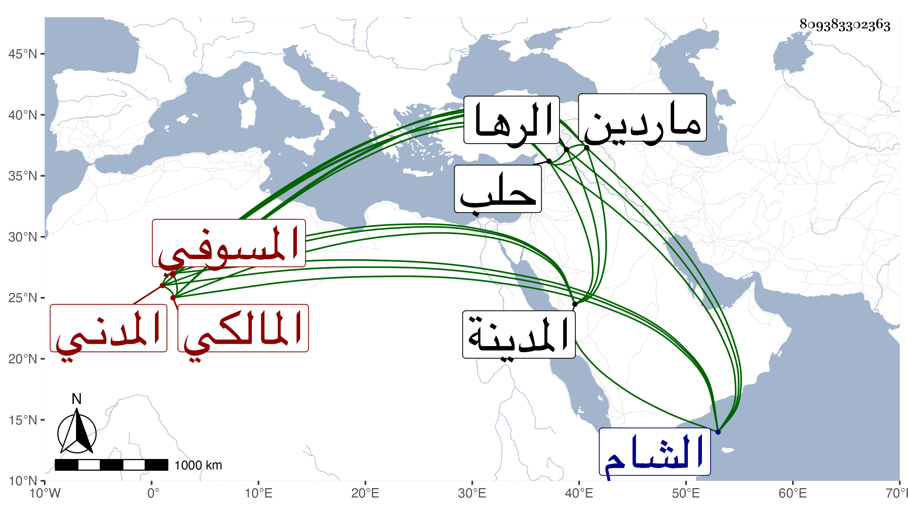

0902Sakhawi.DawLamic.ITO20230111-ara1.EIS1600.809383302363
Biography ID: 809383302363
300
محمد بن محمد بن عبد الله بن إبراهيم الشمس بن الشمس المسوفي الأصل المدني المالكي الماضي أبوه . ولد في أول ذي القعدة سنة تسع وخمسين وثمانمائة بالمدينة وحفظ بها القرآن والرسالة الفرعية والجرومية وألفية النحو وغيرها ، وعرض واشتغل يسيرا وفضل ونظم . وسافر إلى الشام وحلب وماردين إلى الرها ثم رجع ومات بها في جمادى الأولى سنة خمس وثمانين في حياة أبيه عوضهما الله الجنة ، ومن نظمه مما كتبه لى أبوه بخطه وأنشده بحضرتي من لفظه :
| بجاه النبي المصطفى أتوسل | إلى الله فيما أبتغي وأؤمل |
| وأقصد باب الهاشمي محمد | وفي كل حاجاتي عليه أعول |
| حللت حمى من لا يضام نزيله | فعنه مدى ما دمت لا أتحول |
| اذا مسنى ضيم أنوه باسمه | فيدفع ذاك الضيم عني وينقل |
| أقول حبيبي يا محمد سيدي | ملاذي عياذي من به أتوسل |
| عسى نفحة يا سيد الخلق أهتدي | بها من ضلالي إنني متعطل |
في أبيات أوردتها في المدنيين .
